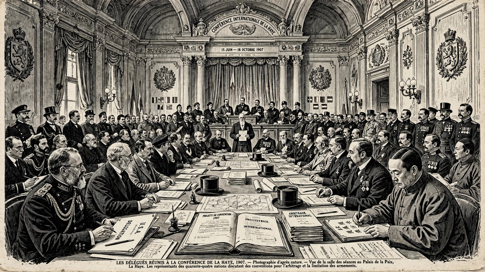

Hague Conventions of 1899 and 1907
The Hague Conventions of 1899 and 1907 are a series of international treaties and declarations negotiated at two international peace conferences at The Hague in the Netherlands. Along with the Geneva Conventions, they were among the first formal statements of the laws of war and war crimes in international law.

The conferences
The First Hague Conference of 1899 was convened on the initiative of Tsar Nicholas II of Russia, ostensibly to pursue disarmament and the peaceful settlement of disputes. Twenty-six nations attended. The Second Conference of 1907, attended by forty-four states, revised the earlier conventions and adopted new ones. A third conference planned for the following decade was overtaken by the First World War.
Principal outcomes
- The Convention for the Pacific Settlement of International Disputes, creating the Permanent Court of Arbitration
- Conventions on the laws and customs of war on land, regulating the treatment of prisoners, the sick and wounded, occupation, and prohibited weapons — including an influential declaration against expanding ("dum-dum") bullets and projectiles discharging asphyxiating gases
- Rules on maritime warfare, hospital ships, and the rights and duties of neutral powers
- The Martens Clause, stating that populations in cases not covered remain under the protection of the principles of international law derived from custom, humanity, and the dictates of public conscience
Legacy
Although the conferences failed at disarmament, their conventions on land warfare underpinned prosecutions at Nuremberg and Tokyo military tribunals, and their substance was largely absorbed into the Geneva Conventions of 1949 and later protocols. The Peace Palace in The Hague, built for the conferences' institutions, now houses the International Court of Justice.
See also
Categories: Hague Conventions | Laws of war | Treaties of the Netherlands